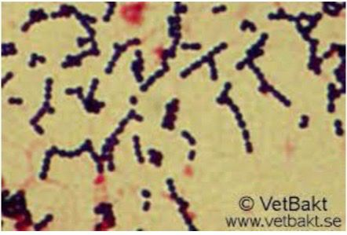

O garrotilho é uma doença contagiosa causada pela bactéria Streptococcus equi subespécie equi, que pode ser transmitida de forma direta, por meio do contato com um animal infectado, ou indireta, por meio do contato com objetos e ambientes contaminados. A doença afeta o trato respiratório anterior de equinos de todas as idades, sendo mais prevalente entre animais jovens (3 meses a 2 anos).
É marcada por produção excessiva de muco e pus nas vias aéreas superiores, acompanhada de inflamação e infecção dos gânglios linfáticos localizados atrás da garganta e abaixo da mandíbula, levando à formação de abscessos.

Streptococcus equi subsp. equi - Agente etiológico do Garrotilho
Agente Etiológico
Seu agente etiológico é a bactéria Streptococcus equi subespécie equi, um microrganismo Gram-positivo, β-hemolítico, pertencente ao grupo C de Lancefield, dotado de significativa virulência e especificidade para equídeos.
Sinais Clínicos
- Febre alta (acima de 39,5°C)
- Letargia e perda de apetite
- Corrimento nasal mucopurulento
- Tosse e dificuldade respiratória
- Aumento doloroso de linfonodos submandibulares e retrofaríngeos
- Disfagia (dificuldade para engolir)
Em alguns animais, a ruptura dos abscessos pode levar à eliminação de grande volume de secreção purulenta, o que melhora os sintomas mas aumenta o risco de contaminação ambiental.
A infecção caracteriza-se, principalmente, pela formação de abscessos nos linfonodos submandibulares e retrofaríngeos, que podem comprimir a faringe e causar dificuldade respiratória. A morbidade da enfermidade é elevada, com impacto considerável sobre o desempenho e crescimento dos animais, sobretudo dos mais jovens, sendo a letalidade geralmente baixa.
Fatores Predisponentes
Estresse
Transporte prolongado
Superlotação
Infecções virais
Parasitoses
Zoonose
Ainda que seja uma zoonose pouco comum, há registros de transmissão interespecífica envolvendo outras subespécies do gênero Streptococcus. Casos de meningite humana por S. equi subsp. zooepidemicus foram relatados em trabalhadores de empresas de manejo equino.